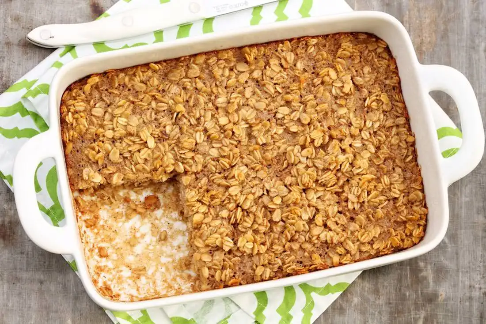

Baked Oatmeal

Description
Homemade baked oatmeal, just like mom used to make.
Ingredients
- 1/2 cup oil or butter
- 3/4 cup sugar (can substitute 1/2 splenda
- 1 egg
- 3 cups oats
- 3/4 tablespoon (=2 1/4 teaspoon) baking powder
- 1/2 teaspoon salt (opt.)
- 1 1/4 cups milk
Steps
- Mix oil, sugar, and egg.
- Add remaining ingredients.
- Pour butter into greased 9"x9" pan, and bake 30 minutes at 350 degrees (or until firm & golden brown).
Back to homepage